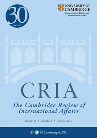

收录于合集 #新刊速递 123个
期刊简介

《剑桥国际事务评论》（Cambridge Review of International Affairs）于1985年创立，是国际关系同行评审学术期刊，以季刊形式发行。由剑桥大学国际研究中心（现隶属牛津大学政治与国际关系学院）编辑，Routledge组织出版。根据2018学术报告显示，影响因子为0.656。
本期编委
编译：
邢戎 朱文菡 晋玉 缪高意 李雯珲 虞敷扬 周心培
校对：
缪高意 周心培 邢戎 胡贺 兰星辰
审核：
胡贺 丁伟航
本期目录
1.道德与进步：国际关系学界关于国际修正主义与现状的叙述
Morality and Progress: IR Narratives on International Revisionism and the Status Quo
2.模因、叙事与中美安全困境初显
Memes, Narratives and the Emergent US–China Security Dilemma
3.“权力转移”的叙述如何影响（塑造）大国间的战争与和平：中美之间必有一战吗？
Are the US and China Fated to Fight? How Narratives of ‘Power Transition’ Shape Great Power War or Peace？
4.“软权力是温和的动物”：日本的叙事权力与概念物化
‘Soft Power is Such a Benign Animal’: Narrative Power and the Reification of Concepts in Japan
5. 边缘地带的国际关系：威斯特伐利亚元叙事与反叙事
International Relations from the Margins: the Westphalian Meta-Narratives and Counter-Narratives in Okinawa–Taiwan Relations
- 流行文化与政治：再叙钓鱼岛争端
Popular Culture and Politics: Re-Narrating the Senkaku/Diaoyu Islands Dispute
- 叙事权力：讲故事如何塑造东亚国际政治
Narrative Power: How Storytelling Shapes East Asian International Politics
摘要译文
1.
道德与进步：国际关系学界关于国际修正主义与现状的叙述
【题目】 Morality and Progress: IR Narratives on International Revisionism and the Status Quo
【作者】
Oliver Turner（英国爱丁堡大学）；Nicola Nymalm（瑞典国际事务研究所）
【摘要】 学者们就当今“崛起国”的追求目标和政策，以及它们在多大程度上修正或维持国际现状展开了辩论。相关文献已经提供富有价值的见解，而本文认为，主流国际关系学界对修正主义和维持现状的概念表现为传统西方主导学科的根深蒂固的自传体式叙事。他们用代表道德和进步的“秩序叙述”限制并组织了辩论，使得修正主义不仅被看成破坏，而且是来自非西方对基于道德、代表文明进步的西方秩序的破坏。这通常使他们具有内生矛盾，且其论证所用的行为体描述也并不可靠。本文对这些国际关系传统概念的形成和发展进行探讨，随后分析中国当代“崛起”的叙述。在包括学界在内的广泛政治叙述中，中国是挑战美国/西方领导下的国际现状的修正主义者，助长了西方与非西方之间不适当的二元分裂，以及国际领域的紧张态势与相互猜疑。本文的目的在于发展一种新的语言和逻辑，来认识“修正主义”和“现状”的行为体及其行为的偶然性和自传体性质。
Scholars debate the ambitions and policies of today’s ‘rising powers’ and the extent to which they are revising or upholding the international status quo. While elements of the relevant literature provide valuable insight, this article argues that the concepts of revisionism and the status quo within mainstream International Relations (IR) have always constituted deeply rooted, autobiographical narratives of a traditionally Western-dominated discipline. As ‘ordering narratives’ of morality and progress, they constrain and organize debate so that revisionism is typically conceived not merely as disruption, but as disruption from the non-West amidst a fundamentally moral Western order that represents civilizational progress. This often makes them inherently problematic and unreliable descriptors of the actors and behaviors they are designed to explain. After exploring the formations and development of these concepts throughout the IR tradition, the analysis is directed towards narratives around the contemporary ‘rise’ of China. Both scholarly and wider political narratives typically tell the story of revisionist challenges China presents to a US/Western-led status quo, promoting unduly binary divisions between the West and non-West, and tensions and suspicions in the international realm. The aim must be to develop a new language and logic that recognize the contingent, autobiographical nature of ‘revisionist’ and ‘status quo’ actors and behaviors.
【编译】 邢戎
【校对】 缪高意
2.
模因、叙事与中美安全困境初显
【题目】 Memes, Narratives and the Emergent US–China Security Dilemma
【作者】
Adam Breuer（哈佛大学）；Alastair Iain Johnston（哈佛大学）
【摘要】 主要理论在解释中美之间日益激烈的竞争时都预测：随着局势越发紧张，中美双方都会建构一种强调零和利益、胁迫效力和对于他者侵略行为事不关己的主体叙事。然而，这些叙事构建的过程既没有做到明确的理论化，也无法在实践中衡量。在数字媒体时代，当一个个“模因”——离散的、广泛流传的关于自我或他者的图片或文字——被融合进关于竞争对手的完整故事中时，这种叙事就被构建起来了。因此作者认为，追踪这些模因扩散的速度和范围可以为分析安全困境的动态过程提供线索。为此，作者发现将美国和中美竞争联结起来的，是一个视中国为“现存国际秩序挑战者”的模因。为追踪这个模因的扩散，作者进行了涵盖网络和词频分析（plagiarism analysis）的定量和定性分析。初步证明现存国际秩序模因和“修正主义中国”叙事或将其他更温和的叙事排挤出局。
All major theoretical approaches that explain the growing rivalry between the United States (US) and China share a common prediction: as tensions develop, the US and China will each construct a master narrative emphasizing zero-sum interests, the efficacy of coercion, and the perceived blamelessness of the Self for the Other’s aggressions. However, the concrete process by which these narratives emerge has been neither explicitly theorized nor measured in practice. We theorize that in the digital media age, narratives emerge when ‘memes’—discrete, widely circulated images/ descriptions of the Self or Other—are connected into coherent stories that eventually coalesce into a master narrative of rivalry. We therefore argue that tracking the speed and spread of memes provides a useful indicator of security dilemma dynamics. To this end, we note that in the United States the US–China rivalry is associated with a prominent meme that describes China as ‘challenging the international rules-based order’ (RBO). We use qualitative and quantitative text analysis, including network and plagiarism analysis, to track the spread of this meme. We provide preliminary evidence that the RBO meme and the ‘revisionist China’ narrative may be crowding out other, less malign narratives about China’s rise.
【编译】 朱文菡
【校对】 周心培
3.
“权力转移”的叙述 如何影响（塑造）大国间的战争与和平：中美之间必有一战吗？
【题目】 Are the US and China Fated to Fight? How Narratives of ‘Power Transition’ Shape Great Power War or Peace？
【作者】
Peter Gries（英国曼彻斯特大学）；Yiming Jing（中国社科院）
【摘要】 中美一定会落入“修昔底德陷阱”—— 权力转移必然会导致大国战争吗？本研究从心理学出发，以普通美国群众为实验对象，借助两个随机的网络实验，通过向受测者播放以“积极（positive）”或以“零和(zero- sum)”的方式叙述中美权力转移的CNN新闻报道，记录受测者在观看报道后产生的对中美关系的认知和看法，研究这些认知和看法对战争爆发可能性的影响。两个实验都表明越以 “零和”思维叙事，就越会放大中美之间的竞争，受测者就越容易对中国产生不信任之感和恼怒之情，从而希望美国政府对中国采取更强硬的政策。同时第二个实验还表明个体对民族主义（nationalism）和对社会不确定性规避（uncertainty avoidance）的程度差异可以调节媒体叙事对民众认知所产生的影响。实证结果表明叙事正是连接“权力平衡中的结构变化”和“个体对战争与和平的影响过程”的心理学机制。
Are the United States (US) and China destined to fall in to a ‘Thucydides trap’ of power transitions leading to great power conflict? This study explores how the intersubjective perception of media-disseminated narratives of US–China interdependence may shape the likelihood of war. In two randomized online experiments, we manipulated ordinary Americans’ perceptions of US–China relations with real CNN video clips that narrated a US–China power transition as either positive or zero sum. Across both experiments, more zero-sum narratives boosted perceived US–China competition, increasing intergroup mistrust, anger and subsequent desires for a tougher China policy. The second study also revealed that individual differences in nationalism and uncertainty avoidance moderated the effects of the perception of media narratives on mistrust and anger. Viewers actively interpret media they are exposed to. These findings empirically demonstrate the power of narratives: specifically, they reveal the psychological mechanisms linking structural changes in the balance of power to the individual-level processes that may determine great power war and peace.
【编译】晋玉
【校对】邢戎
4.
“软权力是温和的动物”：日本的叙事权力与概念物化
【题目】‘ Soft Power is Such a Benign Animal’: Narrative Powerand the Reification of Conceptsin Japan
【作者】 Stephanie Christine Winkler（瑞典斯德哥尔摩大学）
【摘要】 尽管软实力概念和其物化的后果模糊不清，但本文旨在分析日本与软实力概念之间看似自然的契合是如何实现的。在有关概念、专业知识和叙述等最新学术研究成果的基础上，本文提出，物化过程最好由概念结合驱动形成概念化。本文发现，在日本的文化外交、日本与美国的关系以及日本的安全政策中，都存在叙述和培育软实力。此外，本文表明，越是加深理解、界定和接受软实力的温和性和必要性，关于日本应如何行使软实力的论证就越具有说服力。这使得日本作为美国负责任的盟友以及其“对和平的实践贡献”组成了软实力的必然来源，而这种叙述也顺理成章的合法化了。
The purpose of this article is to analyses how the seemingly natural fit between Japan and the soft power concept has been possible despite the notorious vagueness of the concept and what the consequences of soft power’s reification are. By building on recent scholarship on concepts, expert knowledge and narratives, the article suggests that reification processes are best conceptualized as driven by concept coalitions. The article finds that soft power was narrated and nurtured into Japan’s cultural diplomacy, Japan’s relationship with the United States (US) and its security policy. The article, moreover, shows that the softer power was understood, framed and accepted as benign and necessary, the more persuasive arguments about what Japan should do or be in order to wield soft power became. This has legitimized narratives that suggest that Japan’s ‘practice contribution to peace’ as a responsible ally of the US constitutes an inevitable source of soft power.
**
**
【编译】 缪高意
【校对】 胡贺
5.
边缘地带的国际关系：威斯特伐利亚元叙事与反叙事
【题目】 International Relations from the Margins: the Westphalian Meta- Narratives and Counter-Narratives in Okinawa–Taiwan Relations
【作者】 Ching-Chang Chen（日本龙谷大学）, Kosuke Shimizu（日本龙谷大学）
【摘要】 本文通过挖掘相关国家和次国家行为体在构建、竞争和聚集（或分解）自19世纪末以来对琉球/冲绳和台湾的主权主张时所采用的话语实践，研究了在日本和中国边缘关于归属和权威的相互竞争的叙事。基于批判性国际关系文献对有关治国方略的实践和福柯主义的生产性和话语性的权力概念的研究，我们认为上述“边缘地带”是中日两国构建、形成和维护国家认同的中心和关键所在。两国均反复通过暴力和话语手段掩饰其主权主张缺乏本体论的基础。通过研究日本入侵台湾（1874）、钓鱼岛/尖阁列岛争端和冲绳—台湾划定边界三个案例，我们探究中日政府如何运用以国家为中心的叙事来限制和镇压本地产生的反叙事。但是，这些案例也表明，国家试图划定边界以区分“内部/自我/国内”和“外部/他人/国外”并镇压反抗的努力不可能完全成功，这不仅是因为哪里有权力哪里就有反抗，更是因为如果按照其表述的方式成功地形成其身份，国家将走向消亡。
Abstract This article examines competing narratives over belonging and authority at Japan’s and China’s margins by excavating the discursive practices employed by relevant state and substate actors in framing, contesting and (dis)assembling totalizing claims over Ryukyu/Okinawa and Taiwan since the late nineteenth century. Informed by the critical international relations literature on practices of statecraft and Foucauldian conceptions of power as productive and discursive, we suggest that the aforementioned ‘margins’ are sites central to the constitution, production and maintenance of Chinese and Japanese state identities, which have been repeatedly performed through violent material and discursive practices concealing these two states’ lack of ontological foundation. We look at how the state-centric narratives employed by the Chinese and Japanese authorities have worked to limit, curtail and suppress their locally generated counter- narratives in such cases as the Taiwan Expedition (1874), the Diaoyutai/Senkaku Islands dispute and boundary-making between Okinawa and Taiwan. However, these cases also show that efforts to contain resistance to the state’s inscription of boundaries separating an ‘inside/self/domestic’ from an ‘outside/other/foreign’ cannot fully succeed, not only because where there is power there is resistance but also because the state would wither away should its identity formation be successful in the terms in which it is articulated.
【编译】 李雯珲
【校对】 兰星辰
6.
流行文化与政治：再叙钓鱼岛争端
【题目】 Popular Culture and Politics: Re-Narrating the Senkaku/Diaoyu Islands Dispute
【作者】
LHM Ling（纽约社会研究新学院）；Mari Nakamura（莱顿大学）Ching-Chang Chen（日本龙谷大学）；Kosuke Shimizu（日本龙谷大学）
【摘要】
本文作者认为叙述方式可以重新构建社会现实。文章以两国岛屿争端为例，证明“虚幻世界”的想象会最终对“现实世界”有所影响。威斯特伐利亚逻辑中心是主权观，在这种主权观影响下，岛屿争端即使不会使两国爆发战争也会引起双方的冲突。作者提出设想：如果使用另一套假说重新叙述岛屿争端，会产生什么样的结果呢？文章选择以中日两国的流行文化作为指引，对比两部日本动漫“苹果核战记”、“夏娃的时间”和一部中国电视剧“琅琊榜”。这些作品都颠覆了对岛屿纠纷的传统分析并提供了对主权观的另一种概念。最后，本文分析了此类替代性假象对国际关系研究的意义。
Narrative, we argue, can (re)construct social reality. Alternative imaginaries
of ‘being in the world’ can lead to alternative ways of ‘doing in the world’.
We discuss the current dispute between China and Japan over the Senkaku/Diaoyu
Islands as an example. Westphalian logic would have the two countries come to
blows, if not go to war, over the Islands. The Westphalian account of the
dispute centers on the key principle of sovereignty. But what if we utilized a
different imaginary to re-narrate the conflict? We turn to popular culture in
both Japan and China as a guide, and juxtapose two anime, Appleseed and Time
of Eve, with one Chinese TV drama, Nirvana in Fire. Each of these upends
conventional analyses of the Islands dispute and offers alternative
conceptions of sovereignty. We conclude by considering the implications of
such alternative imaginaries for the study, if not practice, of international
relations.
【编译】 虞敷扬
【校对】 胡贺
7.
叙事权力：讲故事如何塑造东亚国际政治
【题目】 Narrative Power: How Storytelling Shapes East Asian International Politics
【作者】
Linus Hagström（瑞典国防大学）；Karl Gustafsson（斯德哥尔摩大学）
【摘要】
我们所处的时代，人们愈发认识到国际政治中的叙事权力的重要性。因此，理解“叙述”如何施展权力，从未如此切中肯綮。本期特刊通过聚焦东亚，探讨国际关系研究中的叙事权力概念。1990年代以来，关于国际权力转移众说纷纭，而东亚始终处于辩论的核心。本文旨在阐明并界定四个关键的二元区别：（a）从个体角度或从叙事本体的角度理解的叙事权力;（b）待解释的叙事权力和作为解释要素的叙事权力;（c）倾向延续或倾向变化的叙事权力;（d）客观观察叙事权力的学者和倡导叙事并可能支配权力的学者。以个人的贡献为导，本文展现了叙事权力研究应对和跨越这些二元区别的方式以及所产生的影响。
We are living at a time when people appear to have become more aware of the power of narratives in international politics. Understanding how narratives exercise power is therefore more pertinent than ever. This special issue develops the concept of narrative power for international relations research by focusing on East Asia—the region that has been at the center of debates about international power shifts since the 1990s. This introduction seeks to elucidate and define four key binary distinctions: (a) narrative power as understood from the perspective of an individualist versus a narrative ontology; (b) narrative power as explanandum versus explanans; (c) narrative power as more prone to continuity or change; and (d) the scholar as a detached observer of narrative power versus the scholar as a narrative entrepreneur and a potential wielder of power. Informed by the individual contributions, the introduction demonstrates how and with what implications research on narrative power can negotiate and traverse these binary distinctions.
【编译】 周心培
【校对】 胡贺
点击左下角“ 阅读原文”可获取本期英文版原文
扫下方二维码查看往期精彩
【新刊速递】第01期 | Review of International Studies Vol.45, No.4, 2019
【新刊速递】第02期 | International Relations Vol.33, No.3, 2019
【新刊速递】第03期 | International Organization Vol.73, No.3, 2019
【新刊速递】第04期 | World Politics, Vol.71, No.4, 2019
【新刊速递】第05期 | European Journal of International Relations
【新刊速递】第06期 | Security Studies, Vol.28, No.4, 2019
【新刊速递】第07期|International Secur.ity, Vol 44, No. 2, 2019 | 国政学人
分类导览一
 分类导览二
分类导览二
国政学人
支持学术公益与知识传播
微信扫一扫赞赏作者 __赞赏
已喜欢，对作者说句悄悄话
取消 __
发送给作者
发送
最多40字，当前共字
上一页 1/3 下一页
长按二维码向我转账
支持学术公益与知识传播
受苹果公司新规定影响，微信 iOS 版的赞赏功能被关闭，可通过二维码转账支持公众号。